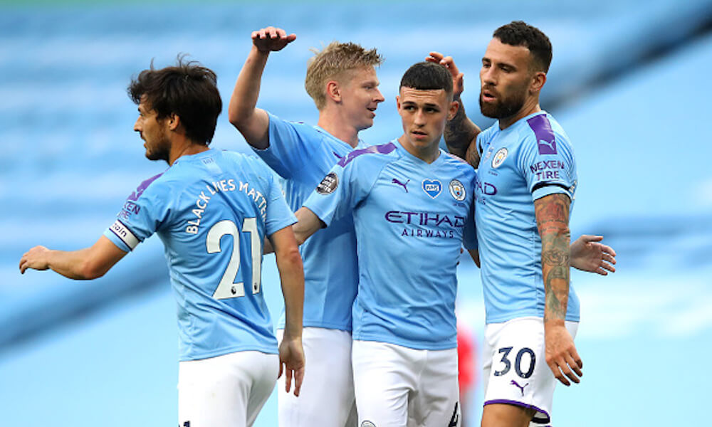

Premier League
También conocida en Inglaterra como The Premiership, es la máxima categoría del sistema de ligas de fútbol de Inglaterra. Comenzó a disputarse en la temporada 1992-93 solo siendo interrumpida en la temporada 2019-20 por la pandemia del COVID-19. Establecida la Primera División de Inglaterra denominada como The Football League en 1888 bajo amparo de The Football Association, se convirtió en la «primera liga de fútbol en el mundo». Se fusionó en 1892 con la Football Alliance para conformar el primer sistema de divisiones, y pasándose a denominar la principal categoría como Football League First Division. Dicho sistema fue ampliándose hasta que se produjo una escisión en la competición pasando a ser la Football League —que actualmente conforma tres divisiones— Premier League su principal exponente, mientras que la hasta el momento Primera División conjunta de Inglaterra y Gales de la Football League pasó a ser la segunda en importancia. El actual formato fue establecido tras un acuerdo el 20 de febrero de 1992 entre los clubes de la First Division por el que decidían separarse de la Football League para tomar ventaja de un lucrativo contrato de derechos de televisión impulsado por ellos mismos. Es por tanto una competición de carácter privado o sociedad en la que los veinte clubes miembros actúan como accionistas a través de una persona delegada por cada representante, quienes rigen dicho comité junto con Dave Richards, director del mismo, y Richard Scudamore, su director ejecutivo.